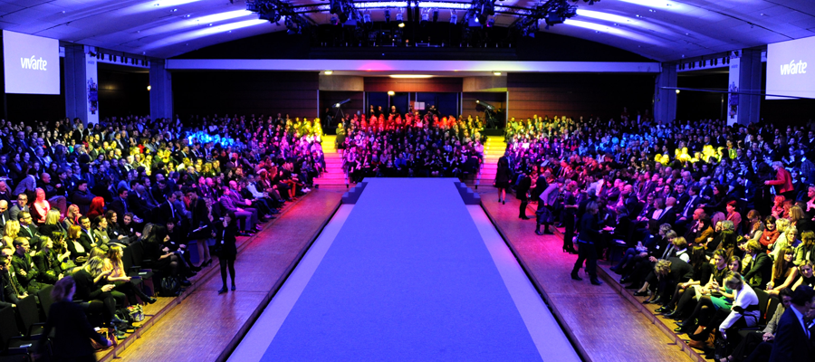
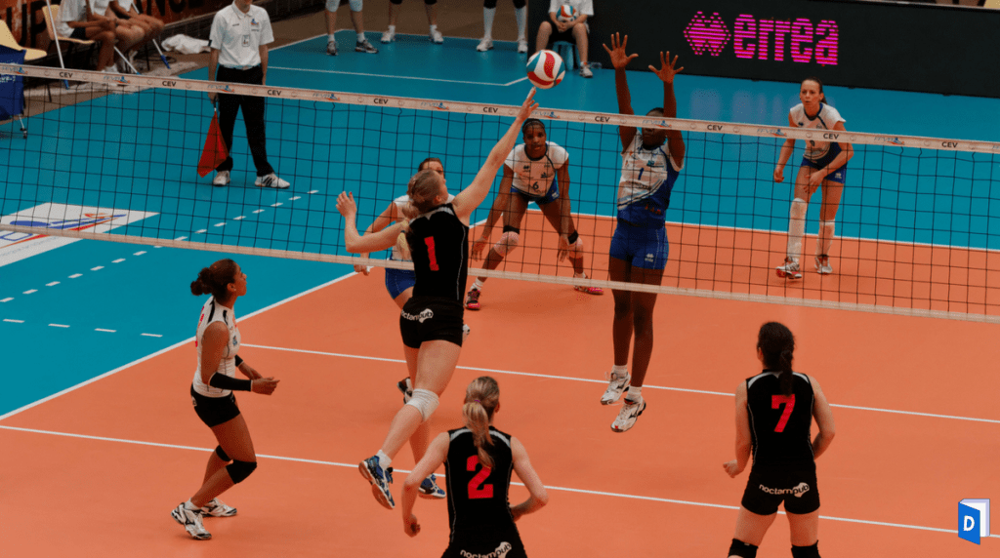
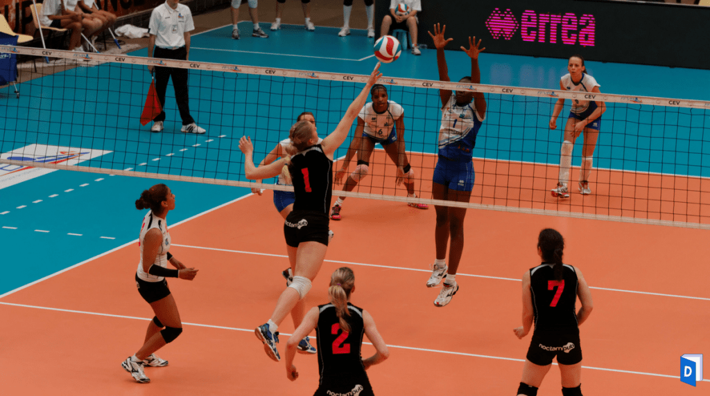

Hey Babes, I'm Alheram!
Are you ready to come into my world? 😈


My name is Alheram and I'm 18 ! I was born on 6 October 2002 (so I'm Libra♎). I am from Niger 🇳🇪 in West Africa, I was born in Niamey but I didn't always live there. When I was born, we moved to Tunisia 🇹🇳 (long live Tunis smiley) then to the Ivory Coast 🇨🇮 and I came back to Niger where I stayed for 6 years. I am very sociable, open-minded and I love laughing. I have had the chance to travel a lot so I love discovering new cultures. ✈️ People say I'm crazy (which is true 🤪haha) because I'm not afraid of ridicule. I like going out, partying and meeting people. 💃🏾 Anyway, I've said enough for now. I let you discover me through my page. xoxo Your girl 😘
Clic here to do sport and share this passion with meThe events ✨

First, let me tell you about the event. I've been passionate about it since I was little 👧🏾. I was 11 years old when I watched for the first time "4 weddings for a honeymoon" 👰🏾with my mother. I watched the whole episode without moving because I was so fascinated by the organization of the event. Since that day I dreamed of founding my own event planning company that I would call "Almazing"! ✨ I find Everything fascinating in event planning: making the decoration💐, planning the menu🥘, booking the rooms etc... What I really like about it is the smile and the happiness of the people when they discover all the organization that was made for them. Seeing their eyes filled with glitter and stars is an amazing feeling haha. 🤩
Parties 💃🏾


I LOVE partying. It's the only time I can be myself and let out my true self! 😝 Parties are an incredible opportunity to socialize, meet people and have a good time.👩🏽🤝👩🏾 Memories are made over time and parties are the places where I make the most memories. It allows me to set myself free. 💫 When I first came to ESSEC, it was the parties that helped me integrate and without them I wouldn't be as comfortable on campus as I am. Memories are very important to me that's why I take pictures or videos of them 📸. It allows me to keep a memory of everything that happened in my life.
Sport 🤾🏾♀️
 

I'm doing sport since I'm young. I start with gymnastique 🤸🏾 that I did during 5 yeras then, I did natation 🏊🏾♀️ during 2 years and Basketball ⛹🏾♀️during 3 years. Finaly I did Volleyball 🤾🏾♀️during 2 years and half. I'm really sporty and I thik my favorite sport is Volleyball. Volleyball allows me to free myself, to evacuate all the stress and pressure I have. It helped me a lot in my last year of high school to disconnect from the pressure of graduation. 📝 Volleyball is the only sport that brings out my competitive side so much 😈 : in every game or practice I wanted to win 🥇and I gave my best for my team to succeed.
Studies 📚📝


Since I was a child 👧🏾, my parents have always told me that school is one of the most important things. Without studying, you will not get anywhere because work guarantees financial stability and security. It also allows you to have a good job and to be able to do whatever you want (travel ✈️, buy a house🏡, invest etc...) During all my high school 📚, I had for ambition to be part of the first 3 of my class🥉, I had to work enormously to the point of sleeping only 4 hours per night. In the end, my perseverance paid off because I was in the top 3 in my class with my best friend.🤩 Thanks to this, I was able to enter ESSEC. 🇲🇦 What I like about studying is the challenges and objectives that you give yourself and that you try to respect. y next goal is to get my exchange to Rabat for my 4th semester
Family 👨👩👧👦


I come from a big family: I have an older brother named Nabran who is 23 years old, an older sister, Anna, who is 21 years old and a younger brother, Ziane, who is 16 years old. My parents and my two brothers are in Niger so I don't see them much. I am lucky to have my sister close to me because I won't see my parents for a long time because of the 3 month internship. In short, family is important, it will never let you down. ❤️